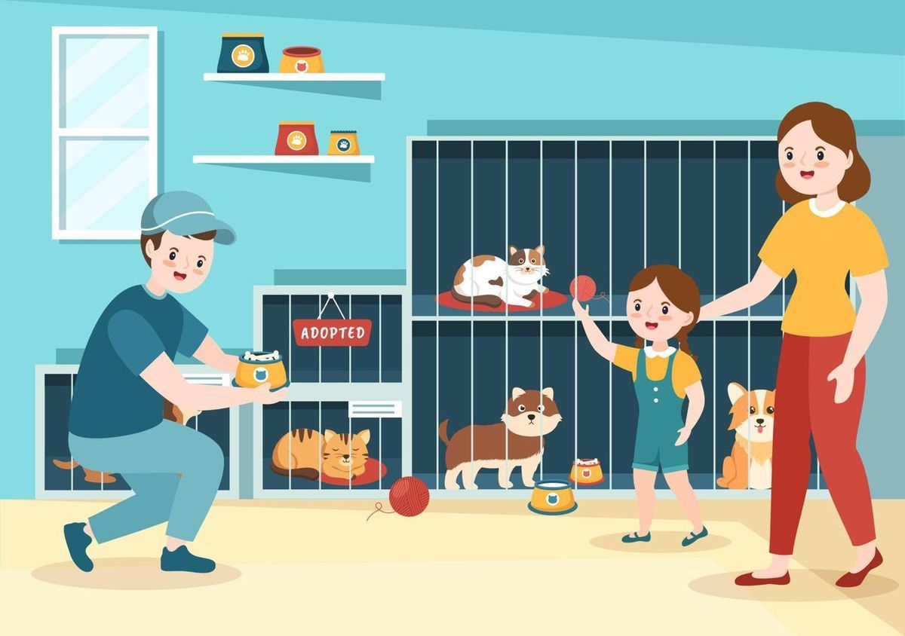
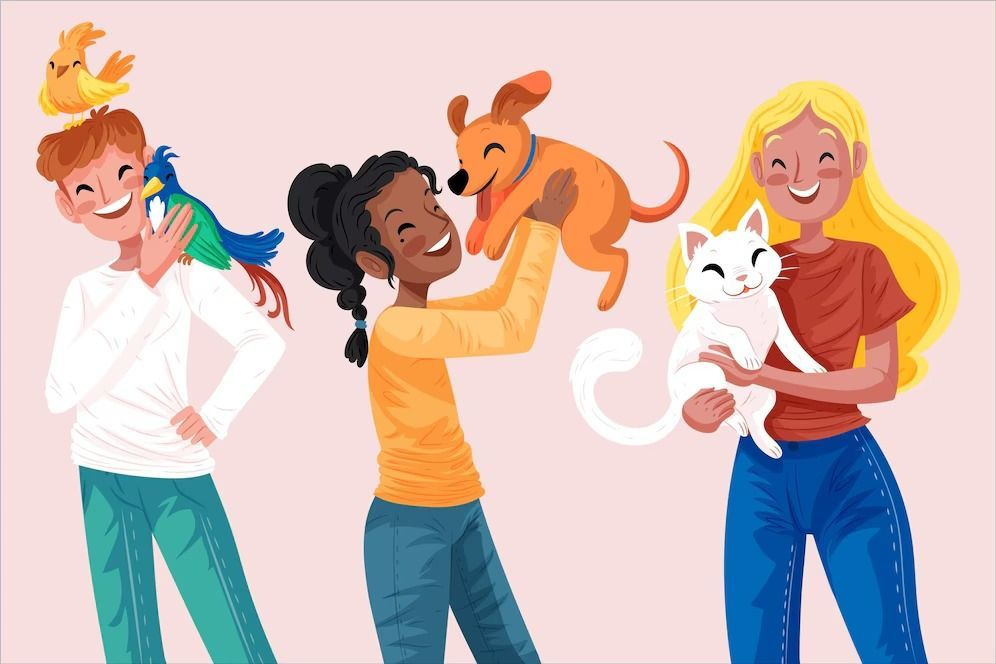
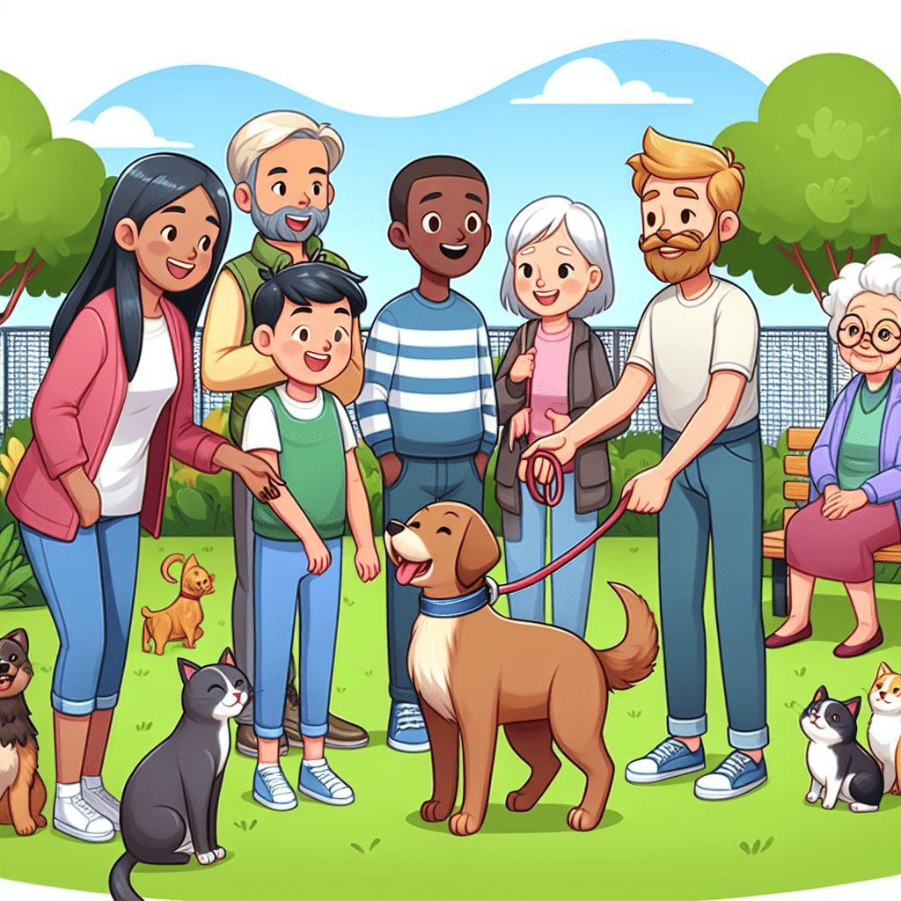

No Planeta Pata, nossos projetos são o coração do nosso trabalho. Cada iniciativa é cuidadosamente planejada para garantir o bem-estar dos animais e promover a conscientização sobre a importância do cuidado responsável.
Nosso principal projeto envolve o resgate de animais em situação de abandono ou maus-tratos. Trabalhamos com uma equipe dedicada de veterinários e voluntários para oferecer cuidados médicos, alimentação adequada e um ambiente seguro para a recuperação desses animais.
Promovemos a adoção responsável como uma forma de dar novos lares amorosos aos animais resgatados. Realizamos eventos de adoção e campanhas educativas para garantir que cada adoção seja feita com consciência e compromisso.
Acreditamos que a educação é fundamental para mudar atitudes em relação aos animais. Desenvolvemos programas educativos em escolas e comunidades, abordando temas como cuidados básicos, direitos dos animais e a importância da convivência harmoniosa entre humanos e animais.
Trabalhamos em colaboração com outras organizações, clínicas veterinárias e autoridades locais para ampliar nosso alcance e impacto. Essas parcerias nos permitem oferecer serviços adicionais, como castração gratuita e campanhas de vacinação.
Cada projeto do Planeta Pata é movido pelo amor e pela dedicação de nossa equipe e voluntários. Juntos, estamos construindo um futuro melhor para os animais e promovendo uma cultura de respeito e cuidado em nossa comunidade.
Com a sua ajuda, o Planeta Pata continua resgatando, cuidando e oferecendo um novo lar para animais que precisam de amor. Cada doação — grande ou pequena — faz toda a diferença. 💫
🌎 Ajude como puder:
💳 Pix: doacoes@planetapata.org
🏦 Conta Bancária: Banco Esperança — Ag. 1234 | Cc. 56789-0
📦 Doe ração, medicamentos ou cobertores: Rua dos Girassóis, 42 — Bairro Aurora
💚 Doe amor. Doe esperança. Doe para o Planeta Pata.
Voltar à Página Inicial